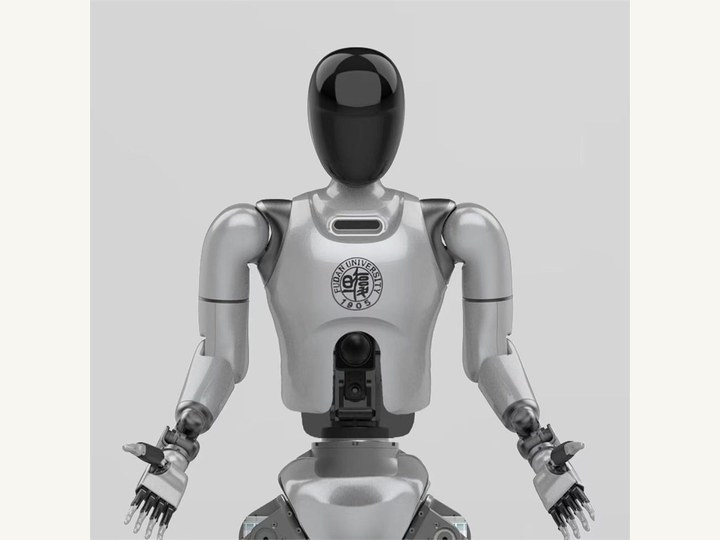

Humanoid Robotics
Guanghua Humanoid Robot Development

Participated in the development of Guanghua-0 and Guanghua-1, Fudan University's general-purpose humanoid robot prototypes. The work involved robotic mechanism integration, system development, and coordination between embodied-intelligence methods and physical robot design.